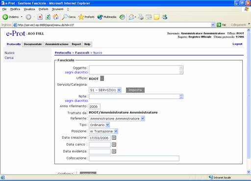

|
WebArch
4.0 (E-prot) – Manuale Utente Unità funzionali |
|
|
|
|
|
Nuovo Fascicolo |
|
|
|
La funzione e' attivabile attraverso la
navigazione del Menu selezionando la voce Protocollo > fascicoli e
consente creare un nuovo fascicolo. Con il termine Fascicolo si intende il concetto più generale di
aggregato di Documenti, inteso come la realizzazione di un raggruppamento di atti.  La funzione è analogamente attivabile attraverso il sottosistema
documentale con la funzione nuovo
fascicolo. La maschera di inserimento dati per la creazione del fascicolo
prevede i seguenti campi: o Ufficio (selezionabile
da lista); o Servizio (selezionabile
da lista); o Categoria
(selezionabile da lista); o Note o Anno di riferimento
(default anno corrente); o Trattato da (coincide
con il responsabile); o Referente (coincide
con l’intestatario è possibile sceglierlo tra gli utenti presenti
nell’ufficio al quale appartiene il Fascicolo); o Tipo fascicolo
(ordinario, virtuale); o Posizione (in
trattazione, in evidenza, agli atti); o Data creazione o Data carico(impostato
dal sistema default data corrente) o Data evidenza o Collocazione
(edificio,palazzo, piano, stanza) Dopo la registrazione
il sistema calcolerà il numero del fascicolo nel formato aaaannnnnn (dove
aaaa = anno corrente e nnnnnn = progressivo numerico di 6 cifre con zeri
davanti). Dopo aver inserito il
Fascicolo è possibile aggregare i Documenti protocollati, i Procedimenti ed i
Faldoni. Per aggregare ciascuno di questi oggetti saranno richiamate le
rispettive maschere di ricerca. Dopo aver eseguito la ricerca degli oggetti da aggregare al
Fascicolo, sarà possibile visualizzarne il dettaglio ed aggregarli al
Fascicolo in modalità multipla selezionando gli oggetti E’ possibile aggregare solo i documenti che siano stati
precedentemente classificati. Dopo l’aggregazione è possibile modificare le
caratteristiche del fascicolo mediante il tasto Modifica, inviarlo agli atti o inviarlo al protocollo in tal caso
verrà inviato alla funzione Fascicoli da Archivio per essere protocollato. Con il pulsante Storia e’
possibile vedere tutte le modifiche che sono state apportate al fascicolo e
vengono riportati i seguenti campi:
|
|
|
|
|